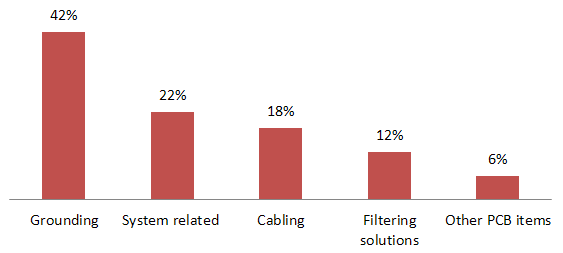
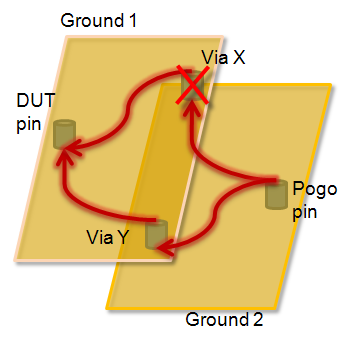

Grounding
The term "ground" has different meanings to different people. For example, signal ground, circuit ground, chassis ground, safety ground, earth ground, reference ground, ground layer, zero volt, ..., and return path.
For DUT board designers, ground means "controlled return path" (see also Signal return paths) and grounding means connecting all grounds in a systematic way that all design objectives are met.
In electronics design, studies show the importance of grounding compared to other compliance solutions.

Basic grounding concepts
There are two fundamentally different grounding concepts:
- The mixed-signal grounding concept, where different ground types (such as DGND, AGND and UGND) were kept separate until connected close to the DUT using electric (inductors) or magnetic (beads) (see Shielding and grounding and Electrical design for mixed-signal testing).
- Today's SOC-type grounding concept, where all grounds are connected right underneath each DUT in a robust Faraday-Cage-like grid. For a detailed discussion see RF grounding.
Objectives and considerations:
Ground systems for digital, analog, DPS, RF, etc. subsystems have different requirements, and some of them are conflicting. You have to judge which requirements apply. Ground design objectives can be, for example:
- minimized cross-talk
- minimized ground bounce
- minimized RF loss
- reduced voltage drop
- acceptable induced noise level
- improved site-to-site correlation
When designing a ground system, consider the following:
|
Digital signals are broadband. |
|
The voltage drop is proportional to the signal current. |
|
The noise level a circuit can withstand or generate. For a cost effective design consider the acceptable noise level. |
|
At low frequencies current follows the path of least resistance. At high frequencies, current follows the path of least inductance (or, in more general terms: impedance). Therefore you need to provide a direct low impedance / resistance return path, depending on high or low frequency requirements. |
|
The return current is distributed inversely proportional to the impedance of each path. Therefore, make sure to always provide only one return path right underneath (or nearby) the signal path (see also Signal return paths). This applies to both horizontal layer paths and vertical layer paths. |
Recommended approach:
- Build Faraday-Cage-like structures to keep signal propagation inside.
- Use direct, low impedance connections to DUT board ground.
One technique is to put the power plane and its ground plane close to the DUT-side layer (and not as center layer as found in earlier DUT board designs). The shorter vias reduce the inductance.
- If a single ground point must be maintained, you can capacitively connect to the signal ground at multiple points.
- Keep the effective capacitor leads short.
Limit the noise
These are the key design steps to create DUT boards with robust grounding against noise:
- Use the best suited card for your application:
- Use the least expensive multi-pin card for all average requirements.
- Use a more expensive clean-signal card for the low level, stringent requirement pins, etc. only.
- Use filtering at the output of the card, that is, nearby the signal's pogo pin landing.
- Stop noise at the circuit. That is, use powerful filtering nearby to the DUT.
- Route signals on the DUT board such that they do not pick up additional noise.
- Combine all these approaches.
Avoid ground loops
Always avoid ground loops. That is, avoid ground circuits where currents can flow in more than one path, or for higher frequencies, where signals can propagate in more than one path.

If a ground connects two points, current should have one path but not an alternative path. Even a return via or return pin far away from the signal pin will cause a ground loop.
Even at slightly different frequencies or levels the distribution of the signal on the two (or more) propagation paths can change. This effect becomes especially disturbing if, for example, the signal picks up more induced (unwanted) noise in one path versus the other, or if the crosstalk prevention is better in one of the paths.
Functional changes
- Introduced in SmarTest 7.2.0